Meme Mimic — the mimic party game you play in your browser
Hear a wild meme sound, mimic it as perfectly as you can, and let the game score your copy out of 100. Then pass the phone. No download, no account: it runs right here on iPhone, Android, iPad, Mac, PC and Chromebook.
▶ Play Meme MimicHow to play
- Pick your character. Swipe the lineup to choose one of 17 3D characters, then add up to 8 players. Everyone picks their own.
- Choose sound packs and rounds. Mix any of the five packs and play 1, 3 or 5 rounds.
- Listen. Every round, everyone gets the same meme sound. You can hear it twice.
- Mimic it. After a 3‑2‑1 count-in, copy the sound into the microphone. Recording stops by itself when you go quiet.
- Get scored and pass. Your character judges the echo out of 100. After the last round, the winner takes the podium.
36 real meme sounds in five packs
- Meme ReactionsFaaah!, You What?, Emotional Damage, Okay Let's Go and more.
- Silly VoicesOIIA OIIA cat, Mu-hehehe, the laughing frog, Zab Zab alien.
- Worldwide & WildBom Dia a Todos, Du Bist Gut Genug, Man Screaming.
- BrainrotItalian brainrot, Dragon Cannelloni, Plankton AUGHHH, Cat Ringtone.
- Movie & TV LinesNo It's Thursday Bro, Nobody's Gonna Know, Surprise!
How the scoring works
Meme Mimic compares your take with the original on three things, entirely in your browser:
- Pitch (55%): the shape of the melody, measured relative to each sound's own middle note. A deep voice copying a tiny squeak is judged on the ups and downs, not on how high it is.
- Rhythm (30%): the loudness pattern over time: the bursts, pauses and build-ups.
- Length (15%): how long the sound you made lasts compared to the original.
The two sounds are lined up with dynamic time warping, so starting a little late or stretching a note is forgiven. A take that is too quiet isn't scored; you just go again.
17 characters to play as
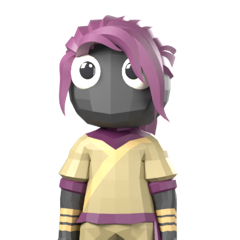
Sand Ninja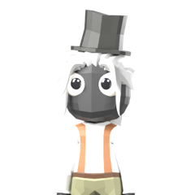
Classy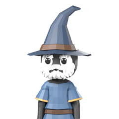
Wizard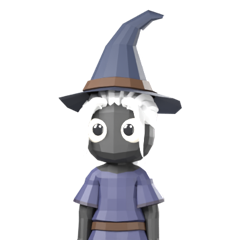
Witch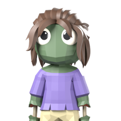
Zombie Gal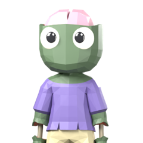
Zombie Guy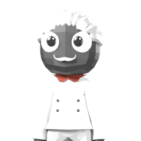
Chef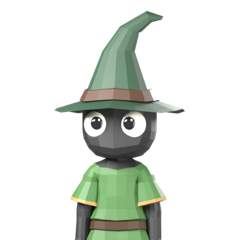
Elf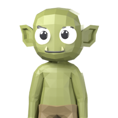
Goblin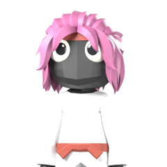
Kimono Gal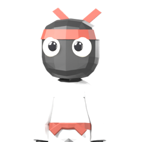
Kimono Guy- Pirate Gal
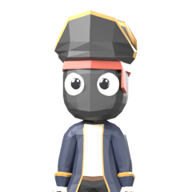
Pirate Captain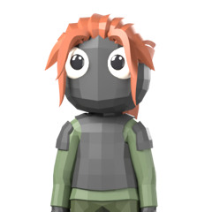
Soldier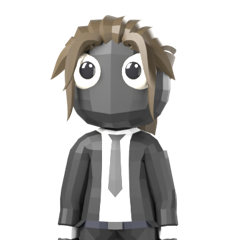
Business Boss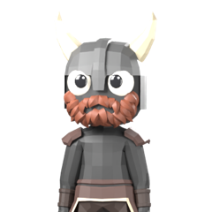
Horned Viking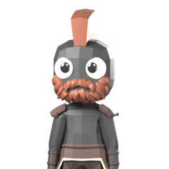
Viking
Every character reacts live: it leans in to listen, bounces on the count-in, stretches with your voice while you record, then cheers or slumps at your score. Tap one to make it hop.
FAQ
What is Meme Mimic?
A pass-and-play party game where you mimic funny meme sounds with your voice and get scored out of 100. Whether you call it a mimic party, a sound challenge or an impression battle, it's the easiest party game to start: one device, zero rules to learn.
Is Meme Mimic free to play online?
Yes. The web version is free in any modern browser on phone, tablet or computer, with no download and no account. Your crew and settings are saved on your device.
How many players?
1 to 8 players on one device. Play solo to beat your best score, or pass the phone and find out who's the best mimic.
Do I need a microphone?
For real scoring, yes: your browser will ask for microphone access the first time you record. Without one, every turn has a clearly labeled demo take so the whole game still works.
Are my recordings uploaded?
No. Your voice is analyzed on your device, kept in memory for the current turn only so you can replay it, and never uploaded or saved. See the privacy policy.
Why can't the game hear me?
Allow the microphone for this site (look for the microphone or lock icon in the address bar), get closer, and copy the sound clearly. On iPhone, also check that no other app is using the microphone.